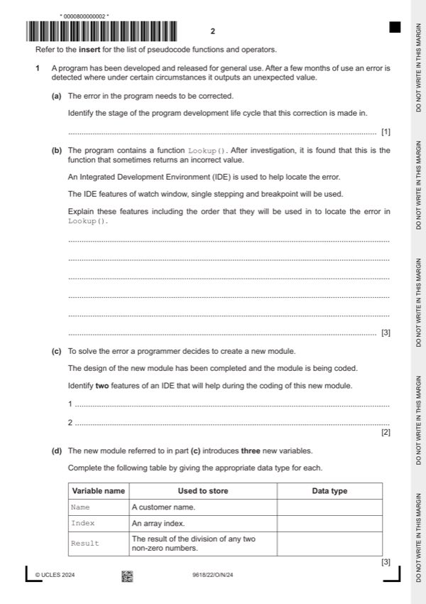

Question 1

Original paper page 2
Part 1(a) — solution
(Corrective) Maintenance 1
Mark points
- Include the ideas shown in the solution above.
Part 1(b) — solution
- Set a breakpoint at the start of / within Lookup, to stop execution at a
- then use single stepping to execute one statement / instruction at a time
- to display the value of variables using a watch window
Mark points
- Set a breakpoint at the start of / within Lookup, to stop execution at a
- then use single stepping to execute one statement / instruction at a time
- to display the value of variables using a watch window
Part 1(c) — solution
Features include: 2
MP1 Editor
MP2 Auto- (syntax) complete / auto correction // identify undeclared
variables(s)
MP3 Prettyprint / auto-indentation / auto (structure) highlighter
MP4 Dynamic syntax checking
MP5 Expand / collapse code blocks
MP6 Context sensitive prompts
Max 2 marks
Mark points
- Include the ideas shown in the solution above.
Part 1(d) — solution
One mark per row: 3
Variable name Used to store Data type
Name a customer name STRING
Index an array index INTEGER
Result the result of the division of any two non-zero
REAL
numbers
University Press & Assessment 2024 Page 4 of 12
9618/22 Cambridge International AS & A Level – Mark Scheme October/November
PUBLISHED 2024
Mark points
- Include the ideas shown in the solution above.
Part 1 — solution
mark for each statement and description
Max 3 marks
Mark points
- Include the ideas shown in the solution above.